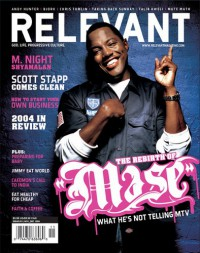

CMnexus
:
Contemporary Christian culture, music, and media.
Browse Magazines
Browse Profiles
cmnexus.org
CM
nexus
→
Profiles
→
K
→
Won Kim
Won Kim
Writing credits listing
May 2004 in
Relevant
#8
Indie Spotlight:
Enter the Worship Circle
Mat Kearney
-
West In November
Kanye West
-
The College Dropout
DJ Danger Mouse
-
The Grey Album
Haste the Day
-
Burning Bridges
Jul 2004 in
Relevant
#9
Mario Winans
-
Hurt No More
Prince
-
Musicology
Jason Harwell
-
Alive In The Fall
Sep 2004 in
Relevant
#10
Something Like Silas
-
Divine Invitation

Nov 2004 in
Relevant
#11
"Louder Than Words"
Mase
May 2005 in
Relevant
#14
Spotlight:
4th Avenue Jones
Automato
-
Automato
Jul 2005 in
Relevant
#15
Spotlight:
Pigeon John
Nichole Nordeman
-
Brave
Hillsong United
-
Look to You
"Feeling Free and Finding Faith"
Common
Nov 2005 in
Relevant
#17
John Legend
David Crowder Band
-
A Collision
Mar 2008 in
Relevant
#32
"Hip-Hop Artist"
Common
CMnexus
(noun)
The magazine index
of modern music
and Christianity
© 2011 CMnexus. Last updated September 2019.
Contact:
Rants and other correspondence to:
editor -AT- cmnexus
-DØT- org
About